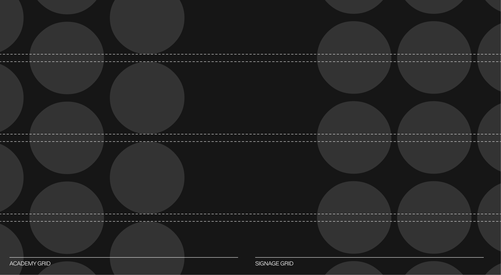
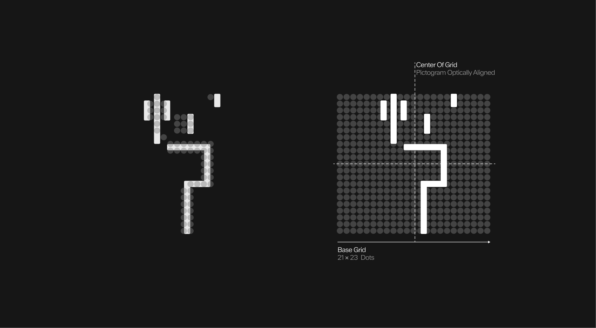
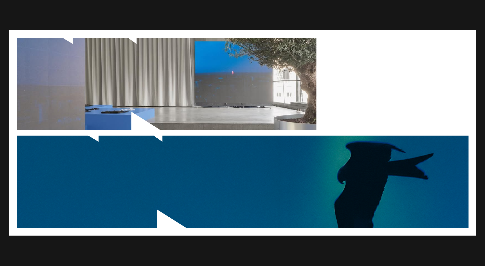

Dot System - Signage
Construction
Since the dot grid is constructed through horizontal alignment, it can theoretically be extended to the left to assist in aligning elements. This principle forms the foundation of the signage system.
Graphic devices are unique visual elements that make the WPA identity instantly recognizable. Inspired directly by the sport of padel — from the perforated racket surface to the geometry of our logo — these devices connect design to the game itself. They provide a flexible system that works across signage, communication materials, and digital platforms, always reinforcing the WPA look and feel.
This section introduces the Dot System, derived from the padel racket, and the Container Devices, modular structures that help organize and highlight content. Both systems are designed for clarity, consistency, and creativity, ensuring that WPA’s visual language remains authentic to the sport while adaptable across contexts.
The foundation of the identity originates from the padel racket itself. Its perforated surface directly inspired the dot grid system, establishing a visual language that feels both authentic and distinctive. This translation from object to graphic ensures the design remains rooted in the sport while providing a flexible framework for building pictograms, icons, and layouts consistently across all applications.
This base dot grid is built on a structure of 21 dots in height and 23 dots in width.
The dot grid system features two variants: one designed for signage and another for the Academy system. Each can host different pictograms according to its use, while preserving the same 21-by-23 dot framework.
To construct the dot grids and ensure their design remains consistent in all applications, it is essential to maintain both the alignment and the scale of the dots. In each grid, the dots are spaced at one-tenth of a dot's diameter.
The dot grid used for signage follows a strict horizontal alignment, with each dot precisely positioned to ensure clarity and legibility. In contrast, the Academy's dot grid introduces a vertical offset, shifting every other column by half a unit. This subtle variation creates a more organic and dynamic rhythm, a visual metaphor for the Academy's energy and the growth of its players.
Both grid types can be used to align line-based pictograms, dot-based pictograms, or those designed for the WPA Academy.
Since the dot grid is constructed through horizontal alignment, it can theoretically be extended to the left to assist in aligning elements. This principle forms the foundation of the signage system.
This grid system can therefore accommodate different types of pictograms: line pictograms, for common use, or dot pictograms, for more specific use. These pictograms serve as simple and modern indicators to help visitors find their way around the WPA premises.
The selection of pictograms can be presented in two distinct styles without changing their meaning.
The pictograms shown here are presented as examples. This icon family is not exhaustive and can be expanded over time to adapt to new needs and specific contexts, while always respecting the core visual system. This selection of line pictograms has been designed for general use.
The pictograms shown here are presented as examples, illustrating how the dot grid system can be applied to signage. This icon family is not exhaustive and may be expanded over time to address new needs and specific contexts, while always adhering to the core visual system. This selection of dot pictograms has been designed for alternative uses or special events.
As specified above, the pictograms follow the same dimensions as the primary version of the dot grid. Consequently, each pictogram measures no more than 23 dots in width and 21 dots in height.
When certain pictograms cannot be perfectly centered within the grid due to uneven dot counts, apply optical alignment. This involves reducing the spacing between the bottom of the pictogram and the grid by one dot, and adjusting the less dense side horizontally by one dot as well. These adjustments ensure the pictogram appears visually balanced within the grid.

Since line pictograms share the same proportions as dot pictograms, they follow the same alignment and centering rules. Namely, a base grid of 21 by 23 dots and the use of optical alignment when a pictogram is not symmetrical.
For consistency, all text blocks must align to the dot grid system. A minimum spacing of nine dots should be maintained on all sides of the typography, from top to bottom. This clear margin provides sufficient breathing room around the text and preserves visual balance when combined with pictograms or other graphic elements.
When combined with text, pictograms must align according to the dot grid system to maintain visual consistency. A total of nine dots define the vertical spacing around the text block. Ensuring clear breathing room. Horizontally, the grid is aligned to the right of the text block and centered to it: three dots act as clearspace between the text and the pictogram, while the remaining six dots define the pictogram's placement area. This alignment ensures that both elements. Text and pictogram appear visually balanced and unified within the signage system.
To ensure clarity and consistency, pictograms must always be positioned to the right of the text block. A clearspace of nine dots should be maintained between the text and the pictogram grid. This spacing ensures legibility and establishes a balanced visual relationship between typography and iconography.
Due to their similar proportions, line pictograms can be aligned in the same way as dot pictograms, using the same spacing and clear space.
In this system, the fixed geometry of the typographic characters dictates the appearance of the line pictograms. As a result, the thickness of the line pictograms is linked to the width of a stem in the Neue Mager typeface, the thinnest typographic occurrence in the system.
To ensure clarity and consistency, a clear space must always surround the pictogram and text block. A minimum of 3 dots is required on the outer edges of the composition. A minimum of 9 dots must separate the pictogram from the text. This clear space rule ensures legibility and prevents visual interference with other graphic elements.
To ensure clarity and consistency, a clear space must always surround the pictogram and text block. A minimum of 3 dots is required on the outer edges of the composition. A minimum of 9 dots must separate the pictogram from the text. This clear space rule ensures legibility and prevents visual interference with other graphic elements.
Here's a demonstration of all the components that make up the signage system. The two typefaces and the pictogram.
Fill colors inside the graphic device can either be white on dark backrgrounds, or black on light backgrounds.
The elements within the graphic device are justified: the text is always left-aligned, while the pictogram is consistently aligned to the right.
As mentioned above, the minimum space between the text and the pictogram grid is 9 dots. However, to maintain readability and avoid excessively long information banners, the maximum spacing between the text and the pictogram is 3 pictogram grids.
The use of different typefaces is defined as follows: the object identified by the graphic system is written in ABC Walter Neue Fett when using line pictograms, or in Pixidot Mayhem Dotted when using dot pictograms. The auxiliary text indicating the direction of the object is always set in ABC Walter Neue Mager. The pictogram is aligned to the right.
Both systems are styled according to pre-established typographic rules. ABC Walter Neue Fett is written with the first letter of each word capitalized, while Pixidot Mayhem Dotted, used in the dot signage system, is written entirely in uppercase.
To indicate directions clearly using the line pictogram system, use the arrow glyphs from the ABC Walter Neue Fett typeface. Place them before the text, separated by a standard typographic space.
To clearly indicate directions within the dot pictogram system, use the arrow glyphs from the Pixidot Mayhem Dotted typeface. They should be placed before the text and separated by a standard typographic space.
Pictograms should never be combined within the same composition. Each sign must display only one pictogram at a time to preserve clarity, focus, and legibility. Grouping several pictograms together creates visual confusion and weakens the overall balance of the signage system
Signage elements may only appear in white on dark backgrounds or in black on light backgrounds.

The following examples illustrate common mistakes to avoid when using the signage system, particularly in the combination of text and pictograms.
The second device: a dense container box derived from the logo, which can then be used to contain text and other graphic elements.
The container box is constructed from the clear space of the logo, which is equivalent to 50% of its height.
In order to apply different elements inside the container box, a safety margin of 10% of the height of the container box is required.
It's possible to place graphic elements, such as the logo or wordmark, by aligning them according to the container box construction.

The container box can hold titles and subtitles, aligned to the left.
It is possible to combine different titles as well as the logo or wordmark inside the container box. Prefer right alignment for the logo or wordmark when text is present at this scale.
In some cases, it is also possible to integrate text in the form of subtitles below the container box, with a clear space equal to the size of the container box's safety margin.
As the container box is modular, it can be expanded into a complex container box while retaining its distinctive serrated contours at the same size.
Here is an example of the different forms that the container box can take, while maintaining the size of its serrated outlines.
During scaling, the container box may change format, but it is important to align it with the grid imposed by the medium.
On the same medium, safety margins are driven by the smallest occurence of the original logo container box, which is itself driven by the medium grid. They remain the same size along the scaling process.
When the container box is scaled up, it can potentially hold more graphic elements, such as the logo or wordmark, which are always aligned with the axes of the container box.
The container box can only be used in white with black graphic elements inside, or in black with white graphic elements inside.
The container box can also be used as a scalable image placeholder. It is important to note that the image used must stand out colorimetrically from the background color so that the serrated edges of the container box are visible.
Since the container box already holds an image, do not apply titles or regular text on top of it.
It is possible to overlay the container box on top of images, for example to illustrate the content of the container box. In these specific cases, depending on the colorimetry of the background image, it is possible to use a black, white, or even transparent container box

To avoid compromising the legibility of the image on which it is placed, the container box must be in its original format, preferably located in the middle of the image, in order to benefit from a similar position to the image in the visual hierarchy of the format.
Over certain images, it is possible to use a transparency effect on the container box, with the specifications detailed above.
Although several examples of use have been presented above, some rules may not have been covered. To ensure consistency and integrity of the guideline, here are some general principles to follow, also illustrating common misuses to avoid
 Do not extend the text's length to the bottom margin of the container box
Do not extend the text's length to the bottom margin of the container box